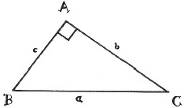

Pisagor, MÖ altıncı yüzyılda yaşamış bir Yunan filozofu ve rakamlara ibadet eden bir tarikatın lideriydi. Tarikatı, ilk dört rakama dua ederdi. Bir, aklı; iki, çatışmayı; üç, uyumu ve dört, adaleti temsil ederdi. Matematik dinlerinden, Pisagor’un adının verildiği ispatı, ‘Pisagor teoremi’ni de içine alan insanlık tarihindeki en mükemmel geometrik ispatlardan bazıları ortaya çıktı. Pisagor teoremi, tüm dik üçgenler (90 derecelik açısı olan üçgenler) için, a ve b’nin üçgenin kısa kenarları olduğu ve c’nin de en uzun kenar, hipotenüs olduğu durumda a²+b²=c² olduğunu basitçe belirtir. Efsaneye göre Pisagor, teoremi ispat ettiğinde o kadar heyecanlanmış ki bir boğayı kurban etmiş.

Elbette birçok kültür, teoremi Pisagor ispat etmeden de biliyordu. Babilliler, a²+b²=c² olduğunu Pisagor’un zamanından en az 1.000 yıl önce biliyorlardı ve antik Mısırlılar muhtemelen formülü MÖ 2550 civarında piramitleri inşa etmek için kullandılar. MÖ 600 yılıyla beraber Çin’de, Hindistan’da ve Mezopotamya’nın çoğunda biliniyordu. Pisagor’a, Batı kültüründe onu ispat eden ilk kişi olmasıyla önem atfedilir. Pisagor teoreminin bugün yüzlerce ispatı mevcut. Ve bu, sadece onlardan biridir.
EK BİLGİLER:
1. Bir Pisagor üçlüsü, üç doğal sayıdan (a, b, c) oluşan kümedir, ve (a²+b²=c²)dir . İyi bilinen iki örnek: (3, 4, 5) ve (5, 12, 13).
2. Başkan James Garfield, 1876’da Pisagor teoremine kendi ispatını yazdı.
3. Çin’de teoreme, ‘Gougu teoremi’ dendi ve ilk kez MÖ 500 ile MS 200 arasında tarihlenen bir matematik kitabında göründü.